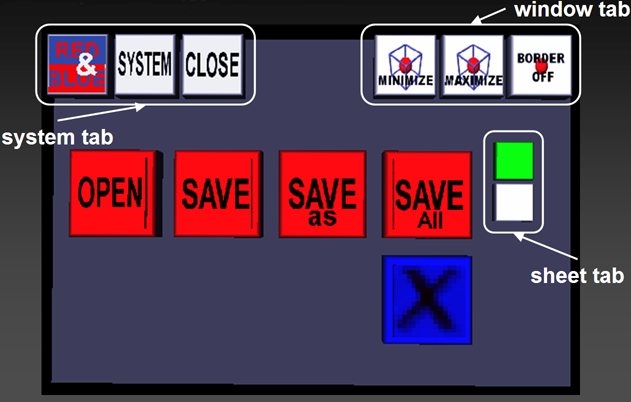
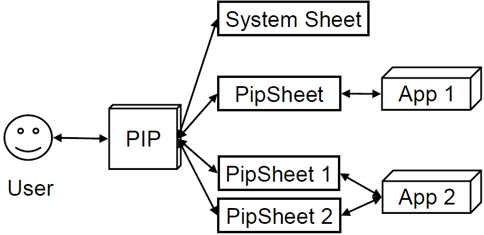
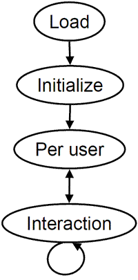

Fig.: View of a user on a single Studierstube application
A Studierstube application can rely on a couple of predefined user interface concepts and components, if necessary. One advanced concept that will be presented here in greater detail is the Personal Interaction Panel (PIP). It provides a platform to present 2D control user interface elements to the user. Because more complex applications cannot rely on 3D direction manipulation alone, such interfaces become necessary. The following image shows the basic parts of a Studierstube application and the user interface for one User.
Fig.: View of a user on a single Studierstube application
The following components are part of the application:
All of these components can be created and tailored for a specific application. The actual look and interaction will depend mainly on the application's goals and the users's tasks it supports.
The PIP's content depends on the currently active application and various configuration options set through the system. The following image gives an overview of the individual parts.

Fig.: Components of the PIP. The currently visible sheet is the system sheet for loading and saving applications.
The system tab in the upper left corner contains buttons for task switching between different applications, to access a system sheet to load and save applications and to close the currently running application. The window tab in the upper right corner contains buttons that control the window that is currently in focus. Windows can be minimized to be invisible, maximized to span the whole space and their bounding box can be switched on or off. In addition to these general controls the sheet tab on the right side gives acces to different pip sheets that an application may provide. It is usually only visible if an application provides more then one sheet of widgets.
The remaining area is left for the individual pip sheets of applications. These are sets of widgets in a two-dimensional layout. They are configured by the applications themselves. If several applications are present, a pip sheet of the one currently in focus is shown. Therefore several applications can provide pip sheets and the system will handle the switching between different sheets automatically. The following image shows the overall relations between PIPs and PIP sheets.

Fig.: Association between a user, her PIP, several applications and their pip sheets.
The layout of the PIP as seen in the first figure can be changed by modifying the associated skin. See the last chapter and the example skin file for details.
The basic construct that brings all of these components together is the SoContextKit node which serves as the basic building block for all applications in Studierstube. Implementations can either use it directly and add any functionality required using scripting and any of the nodes discussed in the earlier chapters or new nodes can be derived from the SoContextKit to create new functions.
The basic SoContextKit assembles a scene graph used for content and a set of widgets that are presented on the PIP. The scene graph contains the application specific graphics and any interaction and behavior nodes that form the application. The widgets are organised into a set of sheets only one of which is visible on the PIP itself. Usually one sheet presents a two-dimensional layout of widgets that are logically grouped together. The following example shows how a simple application looks like:
SoContextKit {
templatePipSheet Separator {
}
windowGroup Group {
}
}
The scene graph in the part templatePipSheet is presented on the PIP of the user. The scene graph in the part windowGroup is positioned in space. Both can be connected via routes or reuse geometry between them.
More advanced applications will derive from the SoContextKit node which provides access to a set of virtual methods that allow closer cooperation with the Studierstube workspace environment. To understand the purpose and use of these methods we have to look at the life time of a Studierstube application.
| Application Life Time | |||
|---|---|---|---|
| Loading of the application file. The scene graph defined in the SoApplicationKit is created. |  | ||
| Startup phase of the application. Only executed once during the life time of an application. | SbBool checkPipGeometry() |
test, if your PIP scene graph is ok and execute any additional initializations. | |
SbBool checkWindowGeometry() |
test, if your application scene graph is ok and execute any additional initializations. | ||
| If either returns FALSE, the application terminates. | |||
| For each user configured for the workspace, per-user initialization is executed. These interfaces are also called, if users join later in a distributed environment | void checkPipConnections(...) |
For each user, any additional connections for user specific PIP sheet copies can be handled here. | |
void checkPipMasterMode(...) |
For each PIP sheet, whenever the application changes the master mode. Only relevant in distributed environments | ||
| During interaction, the focus may shift between applications and tracking events can be handled for windows. The associated methods can be overridden to handle such cases. | void focusChange(...) |
The application focus for a specific user changes and the application is notified of its new status. | |
void windowEventCB(...) |
Tracking events that reach SoWindowKits in the application's scene graph can be handled by the application directly using this callback. | ||
The virtual methods on the right can be overridden by advanced applications to perform additional actions, if the associated events occur. Additional actions may be necessary for multi-user and/or distributed environments, where the basic Open Inventor mechanisms to setup connections are not flexible enough anymore.
An application can use more than one PIP sheet and also tailor the presentation of the PIP to its needs. To access these advanced configuration options a special SoPipSheetKit node has to be used for the templatePipSheet part. It provides the following fields and parts:
| Name | Type | Description | ||||||||||||
|---|---|---|---|---|---|---|---|---|---|---|---|---|---|---|
| sheets | SoSwitch part | This part contains the individual sheets, if more than one is used. It has to be an SoSwitch node and each child is an individual sheet. | ||||||||||||
| tabTextures | SoMFNode | A collection of textures to display on the sheet buttons for switching the sheets. Each entry must be an SoTexture2 node. | ||||||||||||
| autoScaling | SoSFBool | This flag controls whether the sheet will be scaled to fit the sheet area configured for the PIP or if it is left alone. | ||||||||||||
| pipParts | SoSFEnum | This field defines which system parts of the PIP should be displayed for the application. The following flags are available:
|
For example, the simple application in example3 defines the following pip sheet to adjust its look. It turn on only the PIP's body geometry defined in the user kit file, the sheet itself and the tabs to switch sheets. Furthermore it disables autoScaling because the PIP sheets' geometry is already of the correct size. And finally it defines two different PIP sheets which in turn are loaded from files.
templatePipSheet SoPipSheetKit {
pipParts (PIP_BODY|SHEET|SHEET_TABS)
autoScaling FALSE
sheets Switch {
File { name "content/pipSheet1.iv" }
# enable the following line for example3.iv
File { name "content/examples/example3_pipsheet.iv" }
}
}
The PIP's coordinate system is somewhat different than the default geometry of the widgets. Therefore, if you simply specify a widget such as SoPushButton in a PIP sheet it will be rotated 90° around an axis. Therefore, always put the following rotation as the first node in your pip sheets:
RotationXYZ {axis X angle 1.57 }
There are some advanced methods to creating PIP sheets besides writing them by hand. The first is to use the Qt Designer program which can be used to design 2D GUI layouts for the Qt library. It safes its layouts in an XML data file which can be converted automatically to an Inventor file containing the definition of a corresponding widget layout for the Studierstube. The Qt2PIP page explains the details.
Another way is to use automatically generated user interfaces from an abstract state machine description of the user interface components or the application's own state. See the documentation on Generating User-Interface in Studierstube for more details.
While the SoContextKit defines the functionality and all the resources of an application, it presents a kind of blue print for a running application. Within the workspace it is further wrapped in an SoApplicationKit node which carries process-like information for a running instance of an application. Any file that is loaded from the Studierstube workspace must always contain SoApplicationKits wrapping the actual applications. The following is a simple example:
DEF TEST_APP SoApplicationKit {
readOnly FALSE
classLoader SoClassLoader {
fileName "myApp"
className "MyApp"
}
contextKit MyApp {
templatePipSheet SoPipSheetKit { ... }
windowGroup Group { ... }
}
appGeom Separator {
Texture2 { filename "myAppIcon.gif" }
}
}